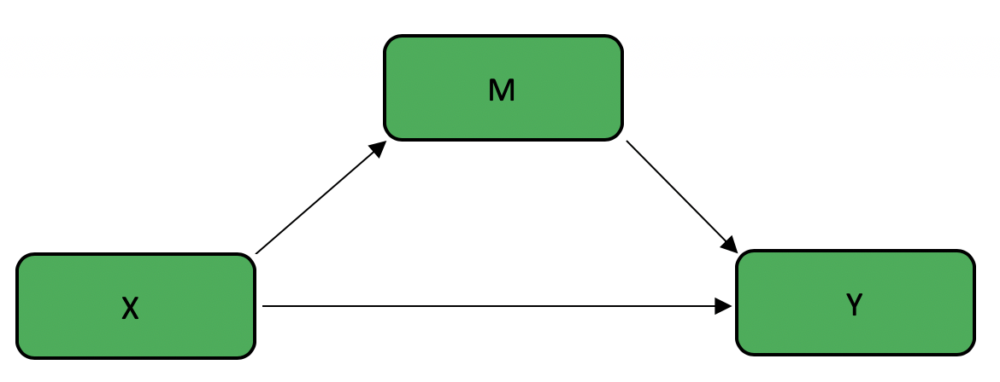
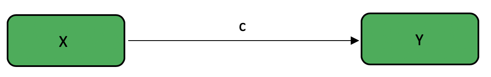

Chapter 2 Bootstrapped Mediation Tutorial
Author: Jeff Kravtiz
This tutorial will a) review the concepts of mediation, moderation, and bootstrapping; b) demonstrate how to complete bootsrapped mediation analyses in R; and c) generate hypothetical datasets to explore various possible outcomes.
2.1 Mediation, Moderation, and Bootstrapping
Basic statistical analyses like ANOVAs allow us to test the effect of one variable on another. However, we often want to go beyond testing these simple relationships to examine more complex relationships, allowing us to test theoretically rich ideas. Mediation and Moderation analyses are two commonly used statisitcal techniques that allow us to explore these complex relationships.
2.1.1 Mediation - Overview
Mediation analyses help us examine the mechanism of the relationship between two variables. This technique answers the question of how variables are related. A mediator variable explains the relationship between an independent variable and a dependent variable.
For example, consider a case in which we know that mindfulness meditation increases happiness in people. Although there is clear evidence that mindfulness increases happiness, research has not yet explored why this is the case. Suppose that we think that mindfulness decreases stress, which in turn increases happiness. In other words, we think that mindfulness only indirectly affects happiness by means of reducing stress.
2.1.2 Moderation - Overview
Moderation analyses help us examine the conditions in which two variables are related. This technique answers the question of when variables are related. A moderator variable affects the strength and/or direction of the relationship between an independent variable and a dependent variable.
Consider again the above case in which we know that mindfulness meditation increases happiness in people. Various studies examine this effect, and while most studies produce positive findings, some produce null findings. We suspect that there certain situations in which mindfulness does not increase happiness. Specifically, we hypothesize that mindfulness can only function properly when people have a sufficient attention span. In other words, we expect that the effect of mindfulness on happiness depends on an individual’s attention span.
2.1.3 Bootstrapping
Bootstrapping is a statistical method that utilizes random resampling with replacement to estimate a population parameter. This technique samples from a given dataset to estimate a parameter when it would otherwise be impossible or impractical to do so. In this way, the dataset is treated as the population, and each random sample aims to replicate a potential score within the true population. The amount of samples varies, but usually falls between 1,000 and 10,000.
One advantage of the bootstrap method is that it produces confidence intervals for your statisitcal estimate. This gives us valuable information of the likely value of a parameter, whereas a p value simply gives us a single number that estimate the likelihood of our statistic assuming that the null is true.
2.2 Mediation - Effects
The purpose of mediation analyses is to determine if the effect of an independent variable (X) on a dependent variable (Y) can be explained by a mediating variable (M). This can be visualized in the following figure:

There are various different effects to consider when conducting a mediation analysis.
- The total effect is the total effect of X on Y, with no consideration of mediator variables. This is also known as the c path

The direct effect is the effect of X on Y after removing the contribution of M. This is known as the c’ path
The effect of X on M is known as the a path
The effect of M on Y is known as the b path
The indirect effect is the effect of X on Y through M. This is equivalent to the product of the a path and the b path, sometimes known as the ab path

2.3 Bootstrapped Mediation in R
This tutorial demonstrates how to conduct bootstrapped mediation analyses using the mediate function in the mediation package. As such, the first step is to install and load the mediation package.
install.packages("mediation")
library(mediation)2.3.1 Structure
In this section, I will first introduce and then breakdown the structure of mediation using the mediate function. The basic structure is as follows:
X <-
Y <-
M <-
model.m <- lm(M ~ X)
model.y <- lm(Y ~ X + M)
library(mediation)
mediation_results <- mediate(model.m = model.m,
model.y = model.y,
sims =
boot = TRUE,
mediator = " ",
treat = " ")
summary(mediation_results)2.3.2 Defining Variables
The next step in mediation is defining your variables. As I mentioned earlier, X will denote the independent variable; Y will denote the dependent variable; and M will denote the mediator variable. We will assign X, Y, and M to be vectors of equal length representing participants’ scores on each of these variables.
X <-
Y <-
M <-In order to demonstrate a practical example, let us revisit the aforementioned example in which we want to investigate whether mindfulness increases happiness by decreasing stress. Suppose that we have one randomly-assigned, between-subjects independent variable of mindfulness training, with one experimental condition in which 50 participants practice mindfulness meditation for 20 minutes (dummy coded 1), and one control condition in which 50 participants close their eyes for 20 minutes (dummy coded 0). We measure both stress levels and happiness, each on a 1 - 7 likert scale, where 7 indicates minimum stress or maximum happiness.
X_mindfulness <- c(rep(0,50),rep(1,50))
Y_happiness <- runif(100, min = 1, max = 7)
M_stress <- runif(100, min = 1, max = 7)2.3.3 Defining Models
To use the mediate function, we must first define two linear models:
model.m, predicting M from Xmodel.y, predicting Y from X and M
model.m <- lm(M ~ X)
model.y <- lm(Y ~ X + M)In our example, it would look like this:
model.m <- lm(M_stress ~ X_mindfulness)
model.y <- lm(Y_happiness ~ X_mindfulness + M_stress)2.3.4 Mediate
Next, we call the mediate function with the following arguments:
model.m=model.mmodel.y=model.ysims= the number of resamples that you want to useboot=TRUEmediator= your mediator variable, in quotestreat= your independent variable, in quotes
mediation_results <- mediate(model.m = model.m,
model.y = model.y,
sims =
boot = TRUE,
mediator = " ",
treat = " ")
summary(mediation_results)In our example, it would look like this:
full_mediation <- mediate(model.m = model.m,
model.y = model.y,
sims = 500,
boot = TRUE,
mediator = "M_stress",
treat = "X_mindfulness")
summary(full_mediation)2.4 Generating Datasets to Interpret Outcomes
Because there are various possible outcomes of a mediation analysis, it is useful to generate datasets to model and interpret each outcome. The possible results of a mediation analysis include a) full mediation, in which the effect of the independent variable on the dependent variable is completely explained by the mediator variable; b) partial mediation, in which in which the effect of the independent variable on the dependent variable is partially explained by the mediator variable, but the independent variable still has some direct effect on the dependent variable; and c) no mediation.
Let’s first look at the results of our running example:
summary(mediation_results)##
## Causal Mediation Analysis
##
## Nonparametric Bootstrap Confidence Intervals with the Percentile Method
##
## Estimate 95% CI Lower 95% CI Upper p-value
## ACME -0.074 -0.281 0.06 0.28
## ADE -0.267 -0.923 0.44 0.53
## Total Effect -0.341 -0.958 0.37 0.37
## Prop. Mediated 0.217 -2.778 2.79 0.52
##
## Sample Size Used: 100
##
##
## Simulations: 500ACMEis the Average Causal Mediation Effect, or the indirect effect (ab path)ADEis the Average Direct Effect, or the direct effect (c’ path)Total Effectis the total effect (c path)Our output also gives us confidence intervals and p values for each of these effects
Because this data was generated randomly, it is likely that none of the effects are significant. If we impose a structure on our data when generating our example datasets, we can examine each of the possible outcomes of mediation.
2.4.1 Full Mediation
In the case of full mediation, the relationship between mindfulness (X) and happiness (Y) is completely explained by stress (M).
# Full Mediation
X_mindfulness <- c(rep(0,50),rep(1,50))
Y_happiness <- c(rep(3,25),rep(4,25),rep(5,25),rep(6,25))
M_stress <- c(rep(3,25),rep(4,25),rep(5,25),rep(6,25))
model.m <- lm(M_stress ~ X_mindfulness)
model.y <- lm(Y_happiness ~ X_mindfulness + M_stress)
library(mediation)
full_mediation <- mediate(model.m = model.m,
model.y = model.y,
sims = 500,
boot = TRUE,
mediator = "M_stress",
treat = "X_mindfulness")
summary(full_mediation)##
## Causal Mediation Analysis
##
## Nonparametric Bootstrap Confidence Intervals with the Percentile Method
##
## Estimate 95% CI Lower 95% CI Upper p-value
## ACME 2.00e+00 1.82e+00 2.22 <2e-16 ***
## ADE -2.31e-15 -3.81e-15 0.00 0.9
## Total Effect 2.00e+00 1.82e+00 2.22 <2e-16 ***
## Prop. Mediated 1.00e+00 1.00e+00 1.00 <2e-16 ***
## ---
## Signif. codes: 0 '***' 0.001 '**' 0.01 '*' 0.05 '.' 0.1 ' ' 1
##
## Sample Size Used: 100
##
##
## Simulations: 500In this case, we know we have a full mediation because we have a significant total effect and indirect effect (ACME), but not a direct effect (ADE). The significant total effect tells us that X affects Y. The significant indirect effect tells us that there was a mediating effect of M. The non-significant direct effect tells us that all of the effect of X on Y was explained by M, showing a full mediation.
2.4.2 Partial Mediation
# Partial Mediation
X_mindfulness <- c(rep(0,50), rep(1,50))
Y_happiness <- c(rep(3,25), rep(4,25), rep(5,25), rep(6,25))
M_stress <- c(rnorm(25,3,1), rnorm(25,4,1), rnorm(25,5,1), rnorm(25,6,1))
model.m <- lm(M_stress ~ X_mindfulness)
model.y <- lm(Y_happiness ~ X_mindfulness + M_stress)
library(mediation)
partial_mediation <- mediate(model.m = model.m,
model.y = model.y,
sims = 500,
boot = TRUE,
mediator = "M_stress",
treat = "X_mindfulness")
summary(partial_mediation)##
## Causal Mediation Analysis
##
## Nonparametric Bootstrap Confidence Intervals with the Percentile Method
##
## Estimate 95% CI Lower 95% CI Upper p-value
## ACME 0.464 0.315 0.63 <2e-16 ***
## ADE 1.536 1.348 1.75 <2e-16 ***
## Total Effect 2.000 1.798 2.21 <2e-16 ***
## Prop. Mediated 0.232 0.166 0.31 <2e-16 ***
## ---
## Signif. codes: 0 '***' 0.001 '**' 0.01 '*' 0.05 '.' 0.1 ' ' 1
##
## Sample Size Used: 100
##
##
## Simulations: 500Here we know we have a partial mediation because we have a significant total effect, indirect effect (ACME), and direct effect (ADE). The significant total effect tells us that X affects Y. The significant indirect effect tells us that there was a mediating effect of M. The significant direct effect tells us that although there was a mediating effect of M, there was still a direct relationship between X and Y, showing a partial mediation.
2.4.3 No Mediation
# No Mediation
X_mindfulness <- c(rep(0,50), rep(1,50))
Y_happiness <- c(rep(3,25), rep(4,25), rep(5,25), rep(6,25))
M_stress <- runif(100, min = 1, max = 7)
model.m <- lm(M_stress ~ X_mindfulness)
model.y <- lm(Y_happiness ~ X_mindfulness + M_stress)
library(mediation)
no_mediation <- mediate(model.m = model.m,
model.y = model.y,
sims = 500,
boot = TRUE,
mediator = "M_stress",
treat = "X_mindfulness")
summary(no_mediation)##
## Causal Mediation Analysis
##
## Nonparametric Bootstrap Confidence Intervals with the Percentile Method
##
## Estimate 95% CI Lower 95% CI Upper p-value
## ACME -0.01266 -0.06022 0.03 0.52
## ADE 2.01266 1.82294 2.23 <2e-16 ***
## Total Effect 2.00000 1.81828 2.21 <2e-16 ***
## Prop. Mediated -0.00633 -0.03070 0.01 0.52
## ---
## Signif. codes: 0 '***' 0.001 '**' 0.01 '*' 0.05 '.' 0.1 ' ' 1
##
## Sample Size Used: 100
##
##
## Simulations: 500Here we know we have no mediation because we have a non-significant indirect effect (ACME), which means that the relationship between X and Y was not at all explained by M.